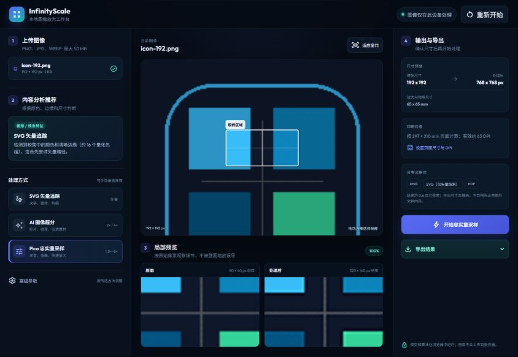

01VECTOR
VTracer SVG
把 Logo、文字、签名和线稿转换成可检查的矢量路径。
线条与透明边缘LOCAL-FIRST IMAGE WORKBENCH
在浏览器里比较重采样、AI 超分与矢量追踪，先看局部，再决定导出。

CHOOSE WITH CONTEXT
InfinityScale 根据内容特征给出起点建议，同时始终允许你手动覆盖，并展示真正执行的方法。
把 Logo、文字、签名和线稿转换成可检查的矢量路径。
线条与透明边缘为照片重建细节；它是生成式超分，不承诺像素级恢复。
照片与纹理用确定性的高质量重采样保留已经干净的插画、渐变与图形。
忠实放大与印刷准备A CALM WORKFLOW
拖入文件、选择文件，或从剪贴板开始。内容分析只在本地发生。
拖动取样框，比较原图和结果；需要时覆盖推荐的方法。
查看预计尺寸、目标 DPI 和有效 DPI，再导出 PNG、SVG 或印刷 PDF。
TECHNICAL HONESTY
AI 会重建细节，SVG 是矢量近似，传统重采样更接近像素保真。页面把这些差异放在用户真正做决定的位置。
OPEN SOURCE, LOCAL BY DEFAULT
试用公开或合成图片，欢迎把浏览器、图像类型和结果反馈带回项目。
进入 InfinityScale